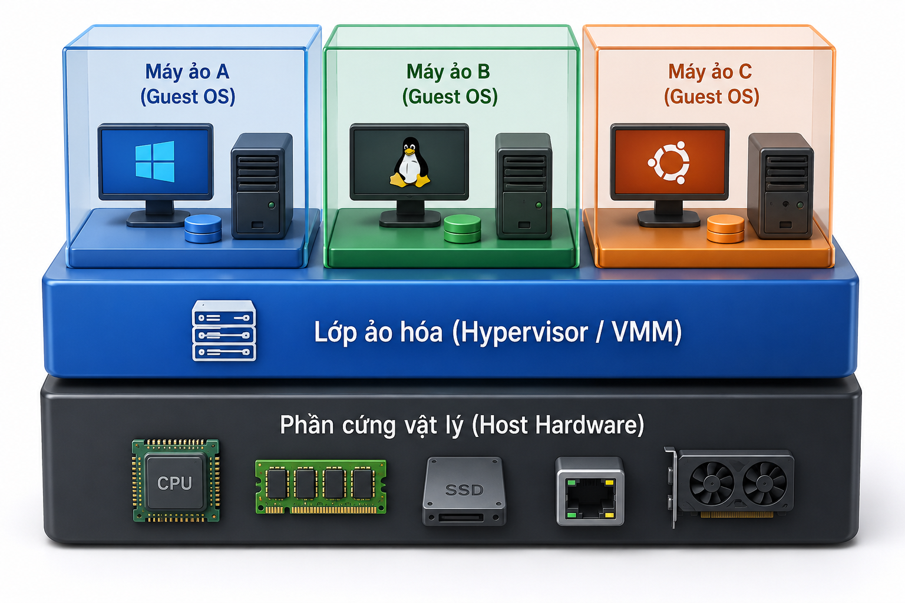
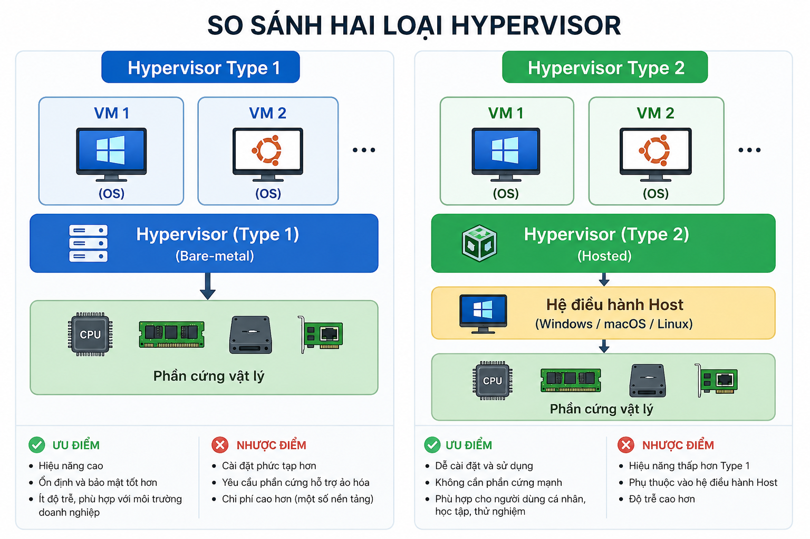

Type 1 · Bare-metal
Cài trực tiếp lên phần cứng. Hiệu năng & isolation cao — chuẩn Cloud.
Ví dụ:
KVM, ESXi, Hyper-V.
Session 02 · DevOps Starter
Ảo hóa, Cloud Server, SSH, UFW và Nginx · Rikkei Education
Sau buổi học, học viên làm được những việc sau
Bốn bài — từ khái niệm đến lab thực tế
Khái niệm ảo hóa — Bare-metal, Hypervisor Type 1 / 2
Khởi tạo Cloud Server — VPS, provider, SSH Key
Bảo mật hạ tầng — SSH hardening và UFW
Nginx — web tĩnh, Server Block, Basic Auth
Cài OS và app trực tiếp lên phần cứng — vì sao không còn đủ?
Trừu tượng hóa phần cứng thành nhiều máy ảo độc lập
Virtualization chèn một lớp phần mềm trung gian lên phần cứng vật lý để trừu tượng hóa CPU, RAM, disk và network thành nhiều phần độc lập. Mỗi phần đóng gói thành một .

Thành phần phân phối tài nguyên và cô lập các VM
Bare-metal hypervisor · Hosted hypervisor

KVM, ESXi, Hyper-V.
Cấp phát máy ảo qua Internet trong vài phút
Chọn nhà cung cấp · đọc đúng 4 chỉ số cấu hình
Provider
Spec
Thay password — chống brute-force ngay từ bước tạo máy
id_ed25519): chỉ nằm trên máy bạn — không commit, không
chat.
id_ed25519.pub): dán lên provider /
~/.ssh/authorized_keys.
ssh-keygen -t ed25519 -C "you@rikkei.academy"
# Gắn public key khi tạo Droplet, rồi:
ssh root@YOUR_VPS_IPIP public = bề mặt tấn công trong vài phút
root + PasswordAuthentication dễ bị brute-force tới khi đoán trúng.
Thu hẹp bề mặt tấn công cổng 22
Không làm việc hằng ngày bằng root.
Chỉ còn public-key.
PermitRootLogin no
PermitRootLogin no
PasswordAuthentication no
PubkeyAuthentication yes
# sudo systemctl reload sshDefault deny incoming · mở tường minh · rồi mới enable
sudo ufw allow 22/tcp
sudo ufw allow 80/tcp
sudo ufw allow 443/tcp
sudo ufw enable
sudo ufw status verboseKhông phơi app thô ra Internet
Path Ubuntu · virtual host cơ bản
/etc/nginx/nginx.conf — cấu hình tổng/etc/nginx/sites-available/ — file từng site/etc/nginx/sites-enabled/ — symlink site đang bật/var/www/html/ — document root mặc địnhlistenserver_nameroot · indexserver {
listen 80;
server_name myweb.com;
root /var/www/myweb;
index index.html;
}Bảo vệ path nội bộ · không loãng sang deploy app
location /secure/ {
auth_basic "Restricted Area";
auth_basic_user_file /etc/nginx/.htpasswd;
}
Tạo user băm mật khẩu:
sudo apt install apache2-utils rồi
sudo htpasswd -c /etc/nginx/.htpasswd admin.
Checklist kiến thức và kỹ năng
KẾT THÚC SESSION 02
Rikkei Education · Hẹn Session 03